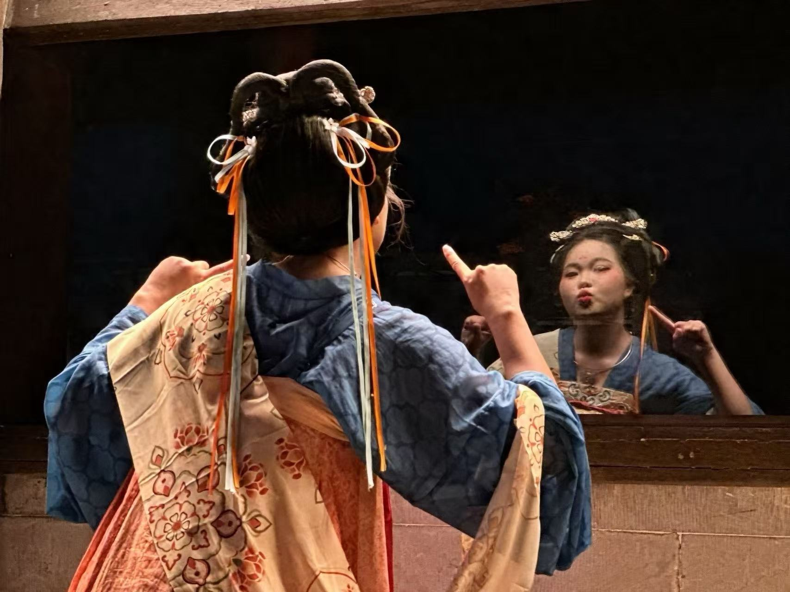
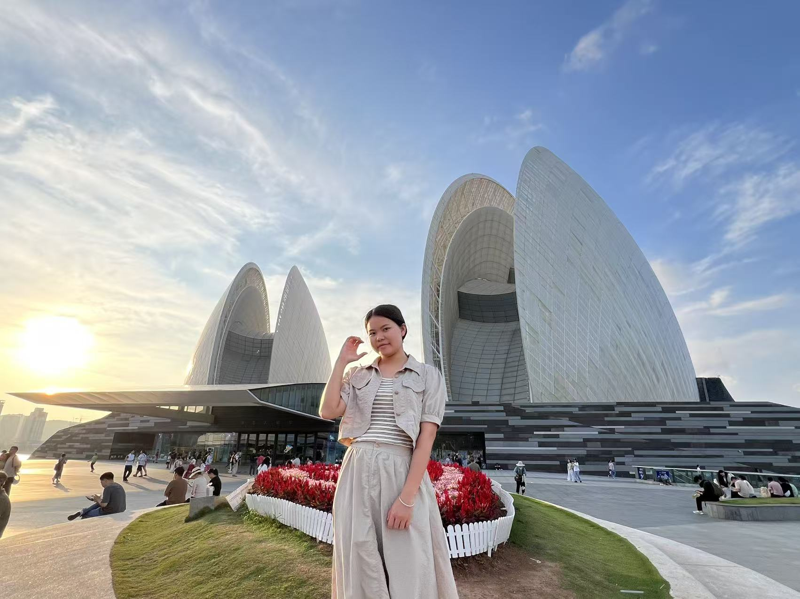
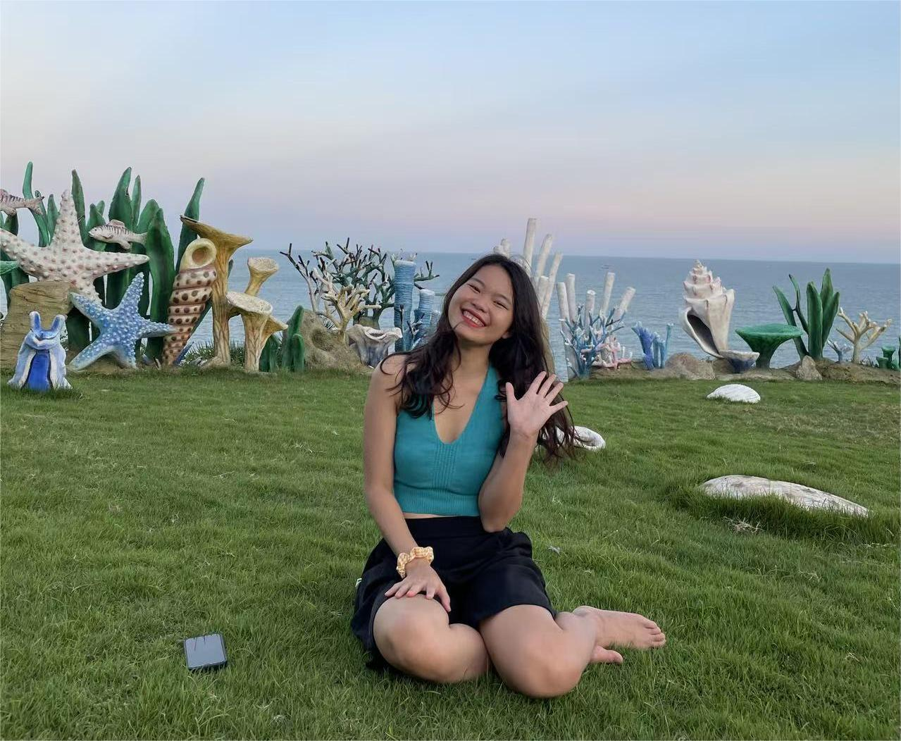

心动瞬间


时光片段
我们的时光
2022年5月21日 · 初遇
第一次在母校旁的联谊会上见到你，目光对视之间，我心里就咯噔一下～

2022年8月27日 · 牵手
在放鸡岛上漫步看夕阳，仿佛整个世界只有我俩，海风都是甜的～
未来 Forever · 日常
我们约定好一起拍很多很多照片，吃很多很多好吃的，看你吃得开心我也开心～
爱的絮语
我的悄悄话^_^
生日祝福
亲爱的琰宝，生日快乐！
很幸运能走进你的生活，陪你走过每一个平凡又珍贵的瞬间。
未来的日子，我会一直陪在你身边，一起去更多地方，一起打造我们的小家庭～
愿你永远开心，永远是我的小女孩❤️
爱你的我 | 2025年12月21日